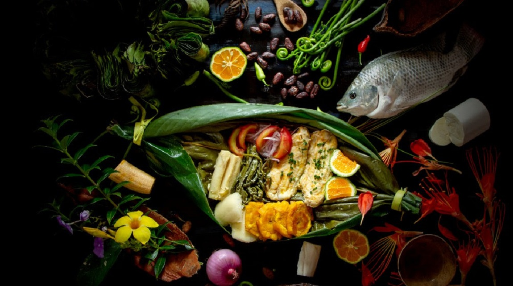

Principales ingredientes en la gastronomia ecuatoriana

La gastronomía ecuatoriana es una fusión única de sabores que se basa en ingredientes frescos y variados. Con una abundante diversidad geográfica, los platos ecuatorianos incorporan elementos clave como el maíz, las papas, el pescado, los mariscos, las frutas tropicales y una amplia gama de especias y hierbas aromáticas. Estos elementos, combinados con técnicas culinarias tradicionales, dan lugar a platos auténticos y deliciosos que reflejan la riqueza cultural y la identidad culinaria del país.
Encebollado
El encebollado es un plato típico de Ecuador que se caracteriza por sus sabores únicos y deliciosos. Algunos de los ingredientes clave son:
- Atún: fresco y de buena calidad.
- Cebolla: en gran cantidad y bien picada, esencial para el sabor distintivo.
- Tomate, cilantro, limón y comino: para realzar el sabor del caldo.
- Yuca y maíz tostado: acompañamientos tradicionales que agregan textura y sabor.
Ceviche
El ceviche es un plato refrescante y popular en Ecuador. Aquí están los ingredientes clave:
- Pescado o mariscos: frescos y bien preparados.
- Limón: su jugo es esencial para "cocinar" el pescado en la preparación del ceviche.
- Cilantro, cebolla roja y tomate: para dar sabor y frescura al plato.
- Sal y pimienta: al gusto.
Puerco Hornado
El puerco hornado es una deliciosa especialidad ecuatoriana. Aquí están los ingredientes clave:
- Puerco: preparado y horneado a la perfección.
- Achiote: una especia importante para el adobo.
- Comino, ajo, sal y pimienta: para realzar el sabor.
- Verduras y acompañamientos: pueden variar según la receta y la región.
Llapingachos
Los llapingachos son una deliciosa opción en la gastronomía ecuatoriana. Aquí están los ingredientes clave:
- Papas: un elemento central en la preparación de los llapingachos.
- Queso: tradicionalmente, queso fresco o queso de mano.
- Cebolla y achiote: para sabor y color característicos.
- Harina y huevo: para unir y dar forma a las tortillas.